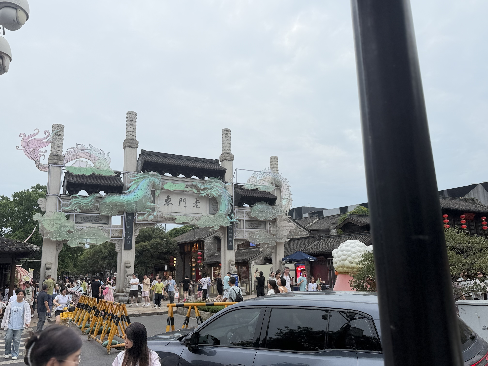
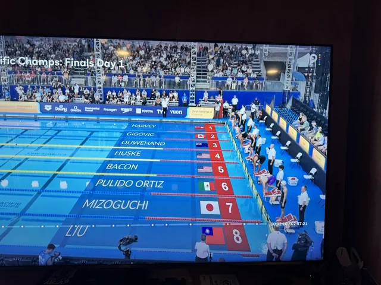

Name: Lila Isett
Program: Master of Science in Information Systems
I am currently studying Information Systems because I am interested in technology, business, and how they work together. I want to develop skills that will help me find a career where I can use both technical and business knowledge.
| Course | Subject |
|---|---|
| IS 7012 | Web Development |
| IS 7025 | Data Wrangling |
| IS 7032 | Database Systems |
My goal is to build a career that combines business and technology. Some career options I am considering include:
I enjoy traveling and experiencing new places and cultures. This summer I visited Nanjing, China. I enjoyed exploring the city, learning about its history, and experiencing the culture.

I enjoy watching the Olympics, especially the swimming events. I like watching the different races and seeing athletes from around the world compete.

Thank you for visiting my About Me page!
Created for IS 7012